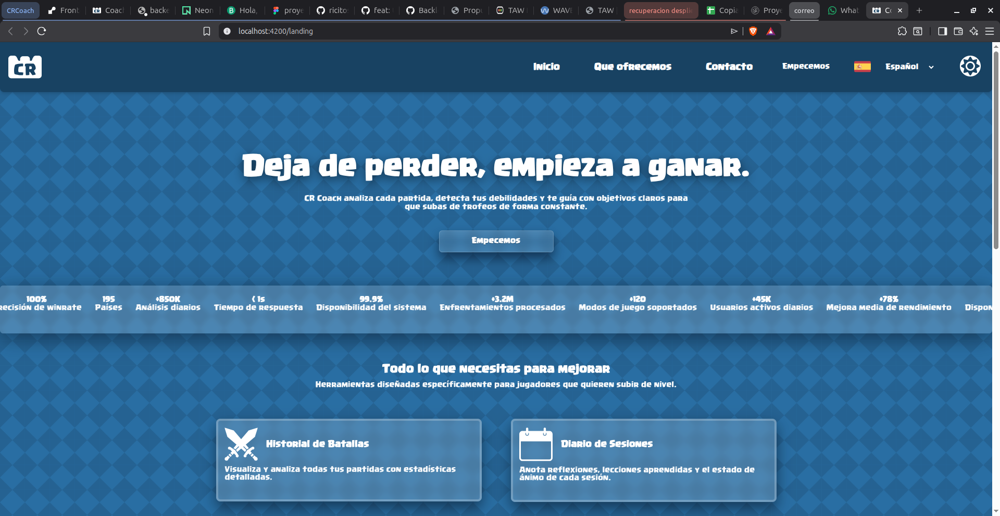

9. Manual de usuario
9.1. Introducción
CRCoach es una plataforma web diseñada para ayudarte a mejorar en Clash Royale. Analiza tu rendimiento, detecta tus debilidades, te permite establecer objetivos de mejora y hace seguimiento de tu evolución a lo largo del tiempo.
Requisitos técnicos
- Navegador: Chrome 90+, Firefox 90+, Safari 15+, Edge 90+.
- Conexión a internet: Necesaria para sincronizar datos con la API de Clash Royale.
- Cuenta de Clash Royale: Necesitas un Player Tag válido (ej:
#8PL9YC2LJ).
9.2. Primeros pasos
9.2.1. Registro
- Abre la aplicación en https://frontend-crcoach.onrender.com.
- Haz clic en "Registrarse" en la esquina superior derecha.

Figura 9.1: Página de aterrizaje de CRCoach- Completa el formulario:
- Email: Dirección de correo electrónico válida.
- Nombre de usuario: Cómo te llamarás en la plataforma.
-
Contraseña: Mínimo 8 caracteres, debe contener mayúsculas, minúsculas, números y al menos un carácter especial.
-
Haz clic en "Crear cuenta".
-
Recibirás un email de bienvenida (si el servicio de email está configurado).
9.2.2. Inicio de sesión
- Haz clic en "Iniciar sesión" en la página de aterrizaje.
- Introduce tu email y contraseña.
- Haz clic en "Entrar".
9.2.3. Vincular tu cuenta de Clash Royale
Una vez dentro de la aplicación, el primer paso es vincular tu cuenta de Clash Royale:
- Ve a tu perfil (icono 👤 en el sidebar).
- En la sección "Cuenta de Clash Royale":
- Introduce tu Player Tag (incluyendo el
#). - Ejemplo:
#8PL9YC2LJ - Haz clic en "Vincular".
- El sistema verificará que el tag existe en la API oficial de Supercell.
- ¡Listo! Tu perfil se ha vinculado correctamente.
¿Dónde encuentro mi Player Tag? Abre Clash Royale → Perfil → Tu nombre aparece encima del avatar. El Player Tag está debajo de tu nombre (empieza por
#).
9.3. Dashboard principal
Al iniciar sesión, verás el Dashboard con un resumen de tu rendimiento:
Figura 9.2: Dashboard principal (representación)
Indicadores clave
| Indicador | Descripción |
|---|---|
| 🏆 Trofeos | Número actual de trofeos y variación semanal |
| 📊 Winrate | Porcentaje de victorias global |
| 🔥 Racha | Racha actual de victorias o derrotas consecutivas |
| 📈 Tendencia | Evolución en la última semana |
Gráfica de evolución
La gráfica principal muestra la evolución de tus trofeos a lo largo del tiempo. Puedes:
- Pasar el ratón por encima para ver valores exactos.
- Seleccionar un rango de fechas para hacer zoom.
- Ver la tendencia general de tu progreso.
Últimas batallas
En la parte inferior del dashboard se muestran tus últimas batallas con:
- Resultado (✅ victoria / ❌ derrota).
- Cambio de trofeos (+30, -28).
- Mazo utilizado y mazo rival.
- Fecha y hora.
9.4. Historial de batallas
Cómo usar el historial
- Haz clic en "Batallas" en el sidebar (icono ⚔️).
- Verás un listado completo de todas tus batallas almacenadas.
Filtrar batallas
Puedes filtrar las batallas usando los siguientes criterios:
| Filtro | Opciones |
|---|---|
| Resultado | Todas, Victoria, Derrota |
| Modo de juego | Ladder, Desafío, Torneo, Amistoso |
| Fecha | Hoy, Última semana, Último mes, Personalizado |
| Arquetipo rival | Beatdown, Control, Cycle, Siege, etc. |
Ver detalle de una batalla
Haz clic en cualquier batalla para ver:
- Mazo completo usado por ti y por el rival.
- Cartas de cada jugador con niveles.
- Duración de la batalla.
- Cambio de trofeos.
- Modo de juego y arena.
9.5. Diagnóstico de debilidades
Cómo usar el diagnóstico
- Haz clic en "Debilidades" en el sidebar (icono 🐞).
- El sistema analizará automáticamente tus batallas y generará un reporte.
Winrate por arquetipo
La gráfica de barras muestra tu porcentaje de victorias contra cada arquetipo:
Cycle: ████████████░░ 60% ← Bueno
Control: ██████████░░░░ 50% ← Normal
Siege: ████████░░░░░░ 40% ← Mejorable
Beatdown: ██████░░░░░░░░ 30% ← Crítico
Interpretación: Si tienes un winrate bajo contra un arquetipo, significa que necesitas practicar más contra ese estilo de juego.
Cartas problemáticas
Identifica las cartas específicas contra las que pierdes más:
| Carta | Winrate | Veces enfrentada |
|---|---|---|
| Mega Knight | 28% | 25 batallas |
| Hog Rider | 35% | 20 batallas |
| Fireball | 40% | 15 batallas |
Recomendaciones
El sistema genera recomendaciones personalizadas basadas en tus debilidades detectadas. Por ejemplo:
- "Practica contra Beatdown en desafíos gratuitos."
- "Añade más construcciones a tu mazo para counterar a Mega Knight."
- "Ve vídeos de jugadores top con tu mazo para aprender nuevas estrategias."
9.6. Sistema de objetivos
Crear un objetivo
- Haz clic en "Objetivos" en el sidebar (icono 🎯).
- Haz clic en "Nuevo objetivo".
- Completa el formulario:
| Campo | Descripción | Ejemplo |
|---|---|---|
| Título | Nombre del objetivo | "Llegar a 6000 trofeos" |
| Descripción | Detalles adicionales | "Subir desde 5230 hasta 6000" |
| Tipo | Categoría | Trofeos, Winrate, Partidas |
| Valor objetivo | Meta a alcanzar | 6000 |
| Valor actual | Valor inicial | 5230 |
| Fecha límite | Fecha tope | 30/04/2026 |
- Haz clic en "Crear objetivo".
Seguimiento de objetivos
Los objetivos se actualizan automáticamente con cada sincronización:
🎯 Llegar a 6000 trofeos
Progreso: ████████████░░░░░░ 77%
Actual: 5230 → Meta: 6000
Tiempo restante: 45 días
Estado: En progreso ✅
Estados de los objetivos
| Estado | Descripción |
|---|---|
| 🔵 En progreso | El objetivo está activo y en seguimiento |
| 🟢 Completado | Has alcanzado la meta establecida |
| 🔴 Fallido | No has alcanzado la meta antes de la fecha límite |
| ⚪ Pendiente | Objetivo creado pero aún no activo |
9.7. Diario de sesiones
Crear una sesión
- Haz clic en "Sesiones" en el sidebar (icono 📝).
- Haz clic en "Nueva sesión".
- Completa el formulario:
| Campo | Descripción |
|---|---|
| Título | Nombre de la sesión (ej: "Sesión de ladder") |
| Notas | Reflexiones sobre cómo jugaste, qué aprendiste |
| Estado de ánimo | 😊 Feliz, 😐 Neutral, 😞 Frustrado |
| Fecha y hora | Cuándo jugaste |
- Haz clic en "Guardar".
Ejemplo de entrada en el diario:
📝 Sesión de ladder - 15/03/2026
😊 Estado: Feliz
Notas: Hoy probé el mazo de Hog Cycle que vi en un vídeo.
Funcionó muy bien contra Beatdown, pero sigo perdiendo
contra Mega Knight. Necesito practicar más ese matchup.
9.8. Gráfica de evolución
Cómo usar la gráfica
- Haz clic en "Progreso" en el sidebar (icono 📈).
- Verás una gráfica interactiva con la evolución de tus trofeos.
Funcionalidades
- Zoom: Selecciona un rango de fechas para ampliar.
- Tooltips: Pasa el ratón por encima para ver valores exactos.
- Leyenda: Muestra qué línea corresponde a qué métrica.
- Periodos: Puedes seleccionar 1 semana, 1 mes, 3 meses o todo el histórico.
Interpretación
- Tendencia al alza: Estás mejorando.
- Meseta: Estás estancado, quizás necesitas cambiar tu enfoque.
- Caídas: Identifica qué cambió en esas fechas (cambio de mazo, nueva liga).
9.9. Panel de usuario
Acceso al perfil
Haz clic en el icono 👤 en el sidebar o en la esquina superior derecha.
Secciones del perfil
| Sección | Descripción |
|---|---|
| Información personal | Editar nombre, email y preferencias |
| Cambiar contraseña | Actualizar tu contraseña |
| Cuenta de Clash Royale | Vincular/desvincular Player Tag |
| Preferencias | Idioma, tema oscuro/claro |
| Eliminar cuenta | Eliminar permanentemente tu cuenta y datos |
Cambiar idioma
CRCoach está disponible en español e inglés:
- Ve a tu perfil.
- En la sección "Idioma", selecciona Español o English.
- La interfaz se actualizará automáticamente.
Activar tema oscuro
- Haz clic en el icono 🌙/☀️ en la esquina superior derecha.
- Alterna entre tema claro y oscuro.
- La preferencia se guarda automáticamente.
9.10. Recuperación de contraseña
Si has olvidado tu contraseña:
- En la página de inicio de sesión, haz clic en "¿Olvidaste tu contraseña?".
- Introduce tu email.
- Recibirás un correo con un enlace para restablecer la contraseña.
- Haz clic en el enlace y establece una nueva contraseña.
- Inicia sesión con tu nueva contraseña.
Nota: El enlace de recuperación tiene una validez limitada (generalmente 1 hora).
9.11. Solución de problemas comunes
"Mis batallas no se actualizan"
Causa: El polling automático ocurre cada 5 minutos.
Solución:
1. Espera unos minutos y recarga la página.
2. Usa el botón de "Actualizar" en el dashboard para forzar una sincronización manual.
3. Verifica que tu Player Tag sigue siendo válido.
"El diagnóstico muestra datos incorrectos"
Causa: El sistema necesita un mínimo de batallas para generar un diagnóstico fiable.
Solución:
1. Asegúrate de tener al menos 20-30 batallas almacenadas.
2. La clasificación de arquetipos es automática y puede tener errores en mazos poco comunes.
"No puedo iniciar sesión"
Causa: Contraseña incorrecta o cuenta no verificada.
Solución:
1. Usa la función "¿Olvidaste tu contraseña?" para restablecerla.
2. Verifica que estás usando el email correcto.
3. Si el problema persiste, contacta con el administrador.
"Error al vincular mi Player Tag"
Causa: El tag no existe o la API de Supercell no responde.
Solución:
1. Verifica que el tag está bien escrito (incluyendo #).
2. Asegúrate de que el tag existe en el juego.
3. La API de Supercell puede estar temporalmente caída. Inténtalo más tarde.
"La aplicación va lenta"
Causa: Puede ser la conexión a internet o la carga inicial de datos.
Solución:
1. La primera carga puede ser más lenta mientras se descargan los assets.
2. Las sucesivas cargas serán más rápidas gracias a la caché del navegador.
3. Verifica tu conexión a internet.
9.12. Preguntas frecuentes (FAQ)
¿Cuánto cuesta CRCoach?
CRCoach es completamente gratuito durante el desarrollo del TFG. No hay planes de monetización a corto plazo.
¿Qué datos almacenáis de mí?
Solo almacenamos los datos necesarios para el funcionamiento: - Email y nombre de usuario (para la cuenta). - Player Tag (para sincronizar con Clash Royale). - Historial de batallas (para el análisis). - Objetivos y sesiones que tú mismo creas.
Consulta nuestra Política de privacidad para más información.
¿Puedo eliminar mis datos?
Sí. En cualquier momento puedes eliminar tu cuenta desde el panel de perfil. Esto eliminará permanentemente todos tus datos asociados (derecho al olvido).
¿Con qué frecuencia se actualizan mis datos?
El sistema sincroniza automáticamente tus datos cada 5 minutos. También puedes forzar una sincronización manual en cualquier momento.
¿Funciona con cualquier cuenta de Clash Royale?
Sí, siempre que el Player Tag sea válido y la API de Supercell esté operativa. Funciona con cuentas de cualquier nivel y región.
¿Puedo usar CRCoach en el móvil?
Sí, la aplicación es completamente responsive y se adapta a cualquier tamaño de pantalla, incluyendo móviles y tablets.
¿Cómo se clasifican los arquetipos?
El sistema analiza las cartas del mazo rival y las clasifica en arquetipos basándose en: - Cartas características del mazo (Golem = Beatdown, X-Bow = Siege, etc.). - Coste de elixir medio del mazo. - Combinaciones conocidas (LavaLoon, LumberLoon, etc.).
¿Puedo compartir mis estadísticas?
Actualmente no hay funcionalidad de perfil público, pero está planificada para futuras versiones.
9.13. Contacto y soporte
Si tienes problemas o sugerencias, puedes contactar a través de:
- Email: cesar2001ricitos@gmail.com
- GitHub: https://github.com/ricitos2001
- Reportar issues: Abre un issue en el repositorio de GitHub.